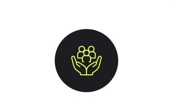

Aprenda habilidades mais recentes
Nossos cursos abrangem uma variedade de áreas, desde habilidades técnicas até desenvolvimento pessoal. Se você está interessado em aprender programação ou qualquer outra coisa, temos algo para você.
Prepare-se para uma carreira
Nossa plataforma oferece uma gama diversificada de opções para atender às suas necessidades e interesses. Desde desenvolvimento de liderança até habilidades técnicas especializadas.

Ganhe Certificado
Nossos certificados são reconhecidos por empresas e instituições em todo o mundo, proporcionando a você uma vantagem competitiva no mercado de trabalho.